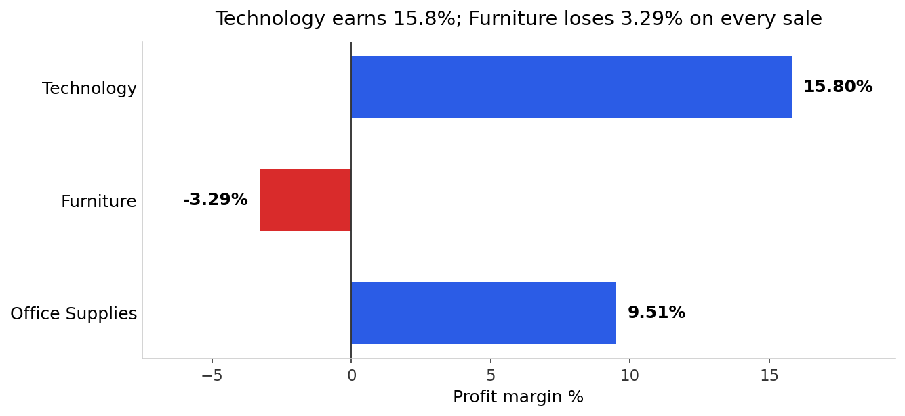
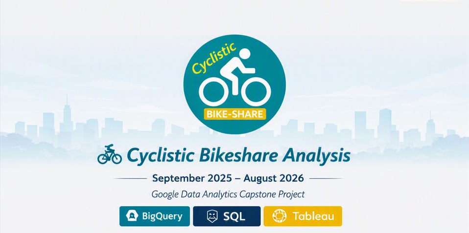

About
I spent 20 years in operations leadership, managing up to 79 staff and $47M in revenue, cutting costs by hundreds of thousands, and building KPIs to fix throughput and turnaround problems. Now I use SQL, Excel, Tableau, and Python to solve those same kinds of problems (cost, capacity, inventory, and performance) in a new setting.
My edge is the combination: I have been the manager waiting on the report, so I build analysis that answers the business question first. What changed, why, and what to do about it.
Impact
Questions I explore
- Where is margin leaking, and what is driving it? In the Superstore analysis, Furniture loses 3.3% while Technology earns 15.8%, and Tables alone are 84% of the Furniture loss. See the analysis
- Which costs can a manager actually control? At Medina, $50K a year saved on QC and vendor spending, and a $284K annual reduction from send-out versus in-house analysis.
- Where does turnaround time break down? At Osceola, nurse collection fell from 1 hour to under 15 minutes, and in-lab UA/CBC turnaround runs 15 minutes against a 1-hour standard.
- Which customers are worth winning over? Cyclistic casual riders take longer leisure trips Friday to Sunday around tourist spots, while members ride weekday commutes. In wholesale, card fees at 3% versus 1% for bank transfer quietly eat margin on the largest accounts. Cyclistic · Wholesale
Projects
Superstore Sales Analysis (SQL, Excel, Tableau)

15 business questions answered in T-SQL over 6,500 orders: profitability by category, region, segment, and product. Technology earns more than the whole company keeps; Furniture's losses, driven by Tables and deep discounting, eat the difference. The headline questions were then re-answered in Excel (Power Query pivot tables fed live from SQL Server) and visualized in Tableau; all three methods agree to the dollar.
Finding: Furniture loses money at every discount level from 20% up, and Tables alone account for 84% of the Furniture loss.
Recommendation: Cap Furniture discounts and fix Tables pricing before chasing more sales volume.
Tools: T-SQL, SQL Server, Excel, Tableau
Cyclistic Bikeshare Customer Conversion Analysis

SQL (BigQuery) and Tableau. Casual vs member rider behavior over 12 months; casual riders take longer leisure trips, spike Friday to Sunday, and cluster at tourist spots like Navy Pier. Three recommendations to convert casuals to members.
Finding: Casual riders ride for leisure (longer trips, Friday to Sunday, tourist areas), while members ride weekday commute patterns.
Recommendation: Aim membership offers at weekend leisure riders and tourist corridors, where casual use is already heaviest.
Tools: SQL (BigQuery), Tableau
Wholesale Revenue & Product Line Analysis
PostgreSQL. Net revenue (gross minus payment fees) by product line, month, and three regional warehouses.
Finding: Card payment fees (3%, vs 1% for bank transfer) quietly eat margin on the largest accounts.
Recommendation: Move large accounts from card to bank transfer to recover up to 2% net margin.
Tools: PostgreSQL
NYC Schools Standardized Testing EDA
Python (pandas, NumPy, Jupyter). SAT scores for NYC public high schools, cleaned and combined into a single composite score for comparison across boroughs.
Finding: Stuyvesant HS tops average math (754) and composite score (2,144); Manhattan shows the widest spread between its schools.
Tools: Python (pandas, NumPy), Jupyter
Skills
Analysis: SQL (T-SQL, PostgreSQL, BigQuery), Excel (pivot tables, large-dataset cleaning)
Visualization: Tableau, Power BI (introductory)
Programming: Python (pandas, NumPy, in progress), Git and GitHub
Domain: Operations leadership, KPI design, cost analysis, inventory and capacity planning
Certifications
- Google Data Analytics Professional Certificate (verify)
- DataCamp: Associate Data Analyst in SQL (verify)
- DataCamp: SQL for Business Analysts (verify)
- Deloitte Data Analytics Job Simulation (The Forage) (certificate)
Contact
Reach me through the form below, or connect on LinkedIn.